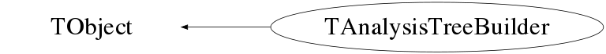

class TAnalysisTreeBuilder: public TObject
Function Members (Methods)
public:
| TAnalysisTreeBuilder(const TAnalysisTreeBuilder&) | |
| virtual | ~TAnalysisTreeBuilder() |
| void | TObject::AbstractMethod(const char* method) const |
| virtual void | TObject::AppendPad(Option_t* option = "") |
| virtual void | TObject::Browse(TBrowser* b) |
| void | BuildActiveAnalysisTreeBranches(map<const char*,TGRSIDetector*>*) |
| static TClass* | Class() |
| virtual const char* | TObject::ClassName() const |
| virtual void | TObject::Clear(Option_t* = "") |
| void | ClearActiveAnalysisTreeBranches() |
| virtual TObject* | TObject::Clone(const char* newname = "") const |
| void | CloseAnalysisFile() |
| virtual Int_t | TObject::Compare(const TObject* obj) const |
| virtual void | TObject::Copy(TObject& object) const |
| virtual void | TObject::Delete(Option_t* option = "")MENU |
| virtual Int_t | TObject::DistancetoPrimitive(Int_t px, Int_t py) |
| virtual void | TObject::Draw(Option_t* option = "") |
| virtual void | TObject::DrawClass() constMENU |
| virtual TObject* | TObject::DrawClone(Option_t* option = "") constMENU |
| virtual void | TObject::Dump() constMENU |
| virtual void | TObject::Error(const char* method, const char* msgfmt) const |
| virtual void | TObject::Execute(const char* method, const char* params, Int_t* error = 0) |
| virtual void | TObject::Execute(TMethod* method, TObjArray* params, Int_t* error = 0) |
| virtual void | TObject::ExecuteEvent(Int_t event, Int_t px, Int_t py) |
| virtual void | TObject::Fatal(const char* method, const char* msgfmt) const |
| void | FillAnalysisTree(map<const char*,TGRSIDetector*>*) |
| void | FillWriteQueue(map<const char*,TGRSIDetector*>*) |
| virtual TObject* | TObject::FindObject(const char* name) const |
| virtual TObject* | TObject::FindObject(const TObject* obj) const |
| static TAnalysisTreeBuilder* | Get() |
| virtual Option_t* | TObject::GetDrawOption() const |
| static Long_t | TObject::GetDtorOnly() |
| virtual const char* | TObject::GetIconName() const |
| virtual const char* | TObject::GetName() const |
| virtual char* | TObject::GetObjectInfo(Int_t px, Int_t py) const |
| static Bool_t | TObject::GetObjectStat() |
| virtual Option_t* | TObject::GetOption() const |
| virtual const char* | TObject::GetTitle() const |
| virtual UInt_t | TObject::GetUniqueID() const |
| virtual Bool_t | TObject::HandleTimer(TTimer* timer) |
| virtual ULong_t | TObject::Hash() const |
| virtual void | TObject::Info(const char* method, const char* msgfmt) const |
| virtual Bool_t | TObject::InheritsFrom(const char* classname) const |
| virtual Bool_t | TObject::InheritsFrom(const TClass* cl) const |
| void | InitChannels() |
| virtual void | TObject::Inspect() constMENU |
| void | TObject::InvertBit(UInt_t f) |
| virtual TClass* | IsA() const |
| virtual Bool_t | TObject::IsEqual(const TObject* obj) const |
| virtual Bool_t | TObject::IsFolder() const |
| Bool_t | TObject::IsOnHeap() const |
| virtual Bool_t | TObject::IsSortable() const |
| Bool_t | TObject::IsZombie() const |
| virtual void | TObject::ls(Option_t* option = "") const |
| void | TObject::MayNotUse(const char* method) const |
| virtual Bool_t | TObject::Notify() |
| void | TObject::Obsolete(const char* method, const char* asOfVers, const char* removedFromVers) const |
| static void | TObject::operator delete(void* ptr) |
| static void | TObject::operator delete(void* ptr, void* vp) |
| static void | TObject::operator delete[](void* ptr) |
| static void | TObject::operator delete[](void* ptr, void* vp) |
| void* | TObject::operator new(size_t sz) |
| void* | TObject::operator new(size_t sz, void* vp) |
| void* | TObject::operator new[](size_t sz) |
| void* | TObject::operator new[](size_t sz, void* vp) |
| TAnalysisTreeBuilder& | operator=(const TAnalysisTreeBuilder&) |
| virtual void | TObject::Paint(Option_t* option = "") |
| virtual void | TObject::Pop() |
| void | Print(Option_t* opt = "") |
| void | ProcessEvent() |
| virtual Int_t | TObject::Read(const char* name) |
| virtual void | TObject::RecursiveRemove(TObject* obj) |
| void | ResetActiveAnalysisTreeBranches() |
| void | TObject::ResetBit(UInt_t f) |
| virtual void | TObject::SaveAs(const char* filename = "", Option_t* option = "") constMENU |
| virtual void | TObject::SavePrimitive(basic_ostream<char,char_traits<char> >& out, Option_t* option = "") |
| void | TObject::SetBit(UInt_t f) |
| void | TObject::SetBit(UInt_t f, Bool_t set) |
| virtual void | TObject::SetDrawOption(Option_t* option = "")MENU |
| static void | TObject::SetDtorOnly(void* obj) |
| static void | TObject::SetObjectStat(Bool_t stat) |
| virtual void | TObject::SetUniqueID(UInt_t uid) |
| void | SetupAnalysisTree() |
| void | SetUpFragmentChain(TChain* chain) |
| void | SetUpFragmentChain(vector<std::string>) |
| void | SetupFragmentTree() |
| void | SetupOutFile() |
| virtual void | ShowMembers(TMemberInspector&) |
| void | SortFragmentChain() |
| void | SortFragmentTree() |
| void | SortFragmentTreeByTimeStamp() |
| void | StartMakeAnalysisTree(int argc = 1, char** argv = 0) |
| void | Status() |
| virtual void | Streamer(TBuffer&) |
| void | StreamerNVirtual(TBuffer& ClassDef_StreamerNVirtual_b) |
| virtual void | TObject::SysError(const char* method, const char* msgfmt) const |
| Bool_t | TObject::TestBit(UInt_t f) const |
| Int_t | TObject::TestBits(UInt_t f) const |
| virtual void | TObject::UseCurrentStyle() |
| virtual void | TObject::Warning(const char* method, const char* msgfmt) const |
| virtual Int_t | TObject::Write(const char* name = 0, Int_t option = 0, Int_t bufsize = 0) |
| virtual Int_t | TObject::Write(const char* name = 0, Int_t option = 0, Int_t bufsize = 0) const |
| void | WriteAnalysisTree() |
protected:
| virtual void | TObject::DoError(int level, const char* location, const char* fmt, va_list va) const |
| void | TObject::MakeZombie() |
private:
| TAnalysisTreeBuilder() |
Data Members
public:
| enum TObject::EStatusBits { | kCanDelete | |
| kMustCleanup | ||
| kObjInCanvas | ||
| kIsReferenced | ||
| kHasUUID | ||
| kCannotPick | ||
| kNoContextMenu | ||
| kInvalidObject | ||
| }; | ||
| enum TObject::[unnamed] { | kIsOnHeap | |
| kNotDeleted | ||
| kZombie | ||
| kBitMask | ||
| kSingleKey | ||
| kOverwrite | ||
| kWriteDelete | ||
| }; |
private:
| static const size_t | MEM_SIZE | Sets the minimum amount of memory used to hold the frament tree |
| TCSM* | csm | A pointer to the CSM Mother Class |
| TDescant* | descant | A pointer to the Descant Mother Class |
| static int | fAnalysisIn | |
| static int | fAnalysisOut | |
| static TAnalysisTreeBuilder* | fAnalysisTreeBuilder | Pointer to the AnalysisTreeBuilder |
| TFile* | fCurrentAnalysisFile | |
| TTree* | fCurrentAnalysisTree | |
| TFile* | fCurrentFragFile | |
| TFragment* | fCurrentFragPtr | |
| TTree* | fCurrentFragTree | |
| TGRSIRunInfo* | fCurrentRunInfo | |
| static long | fEntries | |
| TChain* | fFragmentChain | |
| static int | fFragmentsIn | |
| TGriffin* | griffin | A pointer to the Griffin Mother Class |
| TPaces* | paces | A pointer to the Paces Mother Class |
| TSceptar* | sceptar | A pointer to the Sceptar Mother Class |
| TSharc* | sharc | A pointer to the Sharc Mother Class |
| TTigress* | tigress | A pointer to the Tigress Mother Class |
| TTriFoil* | triFoil | A pointer to the TriFoil Mother Class |
Class Charts



Function documentation
void StartMakeAnalysisTree(int argc = 1, char** argv = 0)
Sets up a fragment chain from the list of fragment files sent to grsisort. This fragment chain then gets sorted by timestamp.
void InitChannels()
Initializes the channels from a cal file on the command line when grsisort is started. If no cal file is input on the command line grsisort attempts to read the calibration from the fragment tree if it exists.
void SetUpFragmentChain(vector<std::string> )
Makes a TChain of all of the fragments input on the command line. This may not work as desired for the Griffin DAQ. In this case histograms should be summed during post processing.
void SortFragmentTree()
Sorts the fragment tree based on the TreeIndex major name. It then puts the fragment into the event Q.
void SortFragmentTreeByTimeStamp()
Suprisingly, sorts the fragment tree by times stamps. It then takes the sorted fragments and puts them into the eventQ.
void SetupFragmentTree()
Set up the fragment Tree to be sorted on time stamps or trigger Id's. This also reads the the run info out of the fragment tree.
void SetupAnalysisTree()
Sets up the analysis tree by creating branches of the available detector systems. The available detector systems are set in the RunInfo of the fragment tree. When the analysis tree sorting begins, an output is created on screen that tells you which detector systems were found in the RunInfo.
void BuildActiveAnalysisTreeBranches(map<const char*,TGRSIDetector*>* )
Build the hits in each of the detectors.
void FillWriteQueue(map<const char*,TGRSIDetector*>* )
Fill the write Q with the built hits in each of the detectors.
void WriteAnalysisTree()
Write the analysis tree to the root file. We do this by filling the analysis tree with each of the built events in the write Q.
void FillAnalysisTree(map<const char*,TGRSIDetector*>* )
Fill the analysis Tree with the built events. Each detector gets its own branch in the analysis tree
void ProcessEvent()
Process the event. We do this by filling a map of the detectors, and put the hits into the appropriate detector class. This is important because different detector systems will need different experimental data/conditions to be set.
void Print(Option_t* opt = "")
Prints information about the Q's and threads in the AnalysisTreeBuilding process
void Status()
Prints the current status for each of the threads in the TAnalysisTree Building process